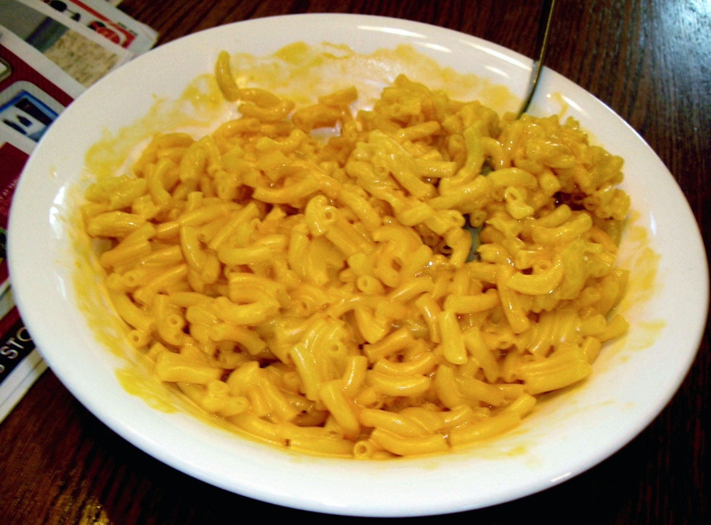

Mac and Cheese

Description:
Mac and cheese, often regarded as the de-facto comfort food. There are so many variations with their own recipes available and many people have their own favorite way of making it.
There is no right or wrong way of making mac and cheese and of course, this is my personal way of making it. If you've never made mac and cheese before, don't fret! I'll try to make it as simple as possible so you can sit down and enjoy one of the most goated foods to ever grace this planet.
Ingredients:
You don't really need much to get things started. Here's what you'll mainly need:
- 1 lb dried elbow pasta
- 1/2 cup of unsalted butter
- 1/2 cup of all purpose flour
- 1 1/2 cups of whole milk
- 2 1/2 cups and a half
- 4 cups of shredded medium cheese
- 2 cups shredded Gruyere cheese
- 1/2 tbsp. salt
- 1/2 tsp. black pepper
- 1/4 tsp. smoke paprika
Steps:
- Preheat the oven to 125 degrees F and grease a 3 qt baking dish (9x13"). Set it aside.
- Boil a large pot of salted water. Add dried pasta and cook for 1 minute less than the package states. Drain and drizzle with some olive oil as well.
- Shred cheese and toss it in to mix, followed by dividing into 3 piles: 3 cups for sauce, 1 1/2 for inner layer, and 1 1/2 cup for topping.
- Melt butter in large saucepan over MED heat. Cook and whisk for 1 minute while pouring 2 cups of the half and half slowly, then pour remaining whole milk.
- Continue to heat over MED until it thicks to a very thick consistency like a semi thinned out condensed soup.
- Remove from heat and stir in spices and 1 1/2 cup of cheese until completely melted and smooth.
- In a large bowl, combine drained pasta with cheese sauce and stir. Then pour half the pasta in the baking dish topped with 1 1/2 cup shredded cheese, and topped with remaining pasta.
- Sprinkle the top with the last 1 1/2 cups of cheese and bake for 15 minutes until cheese is bubbly and lightly golden brown.